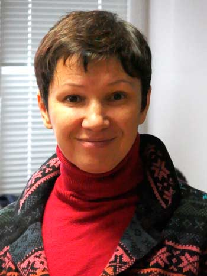

|
Р. Шарифуллина
БОРЬБА ПРОФСОЮЗОВ
ЗА СОХРАНЕНИЕ И УЛУЧШЕНИЕ
ЗДОРОВЬЯ ТРУДЯЩИХСЯ
Доклад на Российском комитете рабочих 19 октября 2013 г.

Общественной организации содействия социальной защите граждан «Петербургская эгида», руководителем которой я являюсь, уже 10 лет. Эта организация объединяет профессионалов — специалистов в области защиты социальных и трудовых прав. В 2002 г. мы образовались как организация, которая помогала развивать независимые профсоюзы, поскольку у независимых профсоюзов не было своего юридического ресурса, а затем мы уже стали развивать различные программы, более широкие, чем просто правовая поддержка профсоюзов, хотя это тоже большая часть нашей деятельности до сих пор. Последние 5 лет мы развиваем программы по защите социально-трудовых прав женщин, которые в общем, на сегодняшний день на рынке труда не защищены, в том числе и профсоюзами, особенно на средних и малых предприятиях. В последнее время мы проводили кампанию по защите беременных женщин, женщин с маленькими детьми от необоснованных увольнений, от невыплаты пособий. Я хочу напомнить, что 50% работников у нас — это женщины, и я надеюсь, на следующем заседании РКР женщины будут представлены в большем количестве, чем на сегодняшнем, и мы будем поднимать в том числе и женские вопросы. Женщина на сегодняшний день не защищена на рынке труда потому, что многие мужчины считают, что она должна быть хранительницей очага, а собственно в этот очаг никто не собирается ей ничего приносить. Поэтому ей приходится работать, и на работе она совершенно не защищена. Сегодня я хочу поговорить с вами как женщина, внести некоторую свежую струю в наше мероприятие, а именно касающуюся здоровья. Мой доклад состоит из трех основных вопросов.
Во-первых, я хочу коснуться истории вопроса, сказать буквально несколько слов о том, как понимали здоровье в различные исторические эпохи. Во-вторых, сказать о том, какая ситуация со здоровьем у нас сейчас в России, как с индивидуальным здоровьем, так и с коллективным здоровьем и каковы показатели этого здоровья. В-третьих, могут ли профсоюзы на это влиять и дать рекомендации, которые я считаю необходимыми.
Первое — это историческая справка.
В науке считается, что на здоровье влияют два основных фактора. Первый фактор — это так называемый внешний фактор и он самый существенный. Это природа, социальные вещи, которые во многом от нас не зависят, и второй фактор — это внутренний фактор, это наше поведение, наш образ жизни, наше отношение к собственному здоровью.
В истории рассматривают три больших периода, когда на здоровье людей влияли разные факторы. В период первобытно-общинного и рабовладельческого строя, в основном, преобладал фактор внешний — так называемый архетипический тип факторов. Продолжительность жизни была около 20 лет, потому, что люди не могли защитить себя от природной стихии, от голода, от холода и т. д. Затем последовал период, когда люди стали бороться с этими внешними факторами и где-то до XVIII века присутствовал т. н. традиционный тип факторов влияния на здоровье. То есть воздействие негативных внешних факторов стало несколько уменьшаться, потому что люди стали бороться с голодом, катаклизмами, но все равно продолжительность жизни была около 30–35 лет. В России это продолжалось где — то до XX века. В конце XIX века люди в 30–35 лет нередко были уже беззубыми, седыми стариками и старухами.
И довольно серьезный скачок в этом вопросе произошел в начале XX века в России, в других странах, более развитых — в XIX веке. Советский период очень сильно повлиял на здоровье, когда медицина стала справляться с различными эпидемиями, т. е. с внешними факторами. Были ликвидированы страшные эпидемии, которые уносили очень много жизней — это и холера, и туберкулез и т. д. Не так давно были изобретены антибиотики, и в результате средняя продолжительность жизни серьезно увеличилась.
Современное понятие здоровья Всемирная организация здравоохранения дает такое: «Здоровье — это состояние полного душевного, физического, социального благополучия, а не только отсутствие болезней и физических увечий», т. е. человечество в своем сознании достигло больших высот в определении здоровья. Основными показателями здоровья сейчас являются: 1) продолжительность жизни; 2) качество жизни, т.е. продолжительность всё-таки здоровой жизни, потому, что можно жить 100 лет прикованным к постели, всё равно это не здоровье. Произошедшая за последние 20 лет деиндустриализация России очень сильно повлияла в целом на здоровье нации. На сегодняшний день цифры по продолжительности жизни, особенно мужчин, катастрофические — мы на уровне таких стран, как Бангладеш и Непал — 59 лет. Это страшная цифра, потому, что в Германии, например, продолжительность жизни мужчин 80 лет, женщин 85 лет, а в 2025 г. они ожидают уже 100 лет. В современной России мужчины живут в среднем 59 лет, женщины — 72 года и в целом продолжительность жизни как мужчин, так и женщин много меньше, чем в развитых странах.
На сегодняшний день появляется очень много статей, в особенности в других странах, по поводу России, которые называются «Россия вымирает», приводятся и соответствующие цифры. В Государственной думе 2 года назад на круглом столе, озвучили эти огромные цифры о том, что, с одной стороны, в России на три рождения приходится пять смертей и фактически это катастрофа. Но она связана не с внешними факторами, мы не видим таких эпидемий, которые косят сегодня людей, всё-таки медицина еще сохранила себя на каком-то уровне, не позволяющем массовым болезням охватывать общество. В основном катастрофа именно со здоровьем и жизнью мужчин, и она связана с внутренними факторами, т. е. с несамосохранным поведением мужчин.
Продолжительность жизни различается среди различных групп населения, классов, имеется также половое различие. Мне показался очень интересным факт, что, оказывается, раньше продолжительность жизни женщин была меньше, чем мужчин. Это было связано с тяжелыми родами, а смертность женщин при родах просто зашкаливала, поэтому женщины жили меньше, чем мужчины. Сейчас ситуация изменилась, женщины стали жить дольше, чем мужчины, в связи с тем, что медицина лучше стала и женщины меньше рожают и т. д., но мужчины очень сильно отстают, особенно в России, поскольку те риски, которые действуют на протяжении жизни мужчины — алкоголизм, курение, рискованное, несамосохранное поведение, отсутствие жизненных перспектив — у мужчин часто практически нет мотива жить.
Ситуация качественно изменилась по сравнению с советским периодом. Во-первых, на сегодняшний день для работодателя, представителя господствующего класса, жизнь и здоровье работника фактически являются расходным материалом т. е. ничем, просто материалом, чтобы извлекать все больше и больше прибыли, все больше и больше доходов. Поэтому ждать от работодателей доброты или гуманности на сегодняшний день просто наивно. И мы видим, что всё реже проводится аттестация рабочих мест, а если проводится — то из рук вон плохо, не определяются вредные факторы.
Мы видим и то, что так называемые «эффективные собственники» экономят на технике безопасности, на издержках, потому что это серьезные издержки, экономят на средствах индивидуальной защиты и т. д. Казалось бы, государство должно с этим бороться, но нет, государство, сегодняшняя власть у нас стоит на стороне работодателя, на стороне олигархического капитала. Например, недавно был принят совершенно вопиющий закон, когда порядок расчета среднего заработка изменился, но профсоюзы даже слова не сказали. Как ни странно, единственные, кто вышел против этого, были беременные женщины, потому, что это резко отразилось на их пособии по уходу за ребенком. На сегодняшний день это привело к тому, что, особенно среди молодых рабочих, у которых стаж еще не выработался, резко упал размер пособия по больничному листу. Поэтому сейчас молодые работники переносят все болезни на ногах, просто не берут больничный лист, и вы понимаете, какой это удар по здоровью.
Во-вторых, сейчас есть огромная проблема с определением профессиональных заболеваний. Практически доказать, что ваша болезнь является профессиональной и взыскать компенсацию очень сложно, т. е. нужно очень много судиться, это очень много временных и прочих затрат. Даже если профессиональное заболевание вам назначено, то и тогда медико-социальная экспертиза старается уменьшить процент утраты трудоспособности, чтобы не оплачивать, и тому есть множество примеров.
Вопиющим фактом является Постановление № 870 об аттестации рабочих мест, где написано, что компенсацию за вредность необходимо установить дополнительным нормативным актом, который должно издать министерство труда. А это постановление до сих пор не издано. Дело дошло до того, что профорганизация МПРА завода Форд обратились в суд, дело всем известного Маршрутова, молодого рабочего, который обратился в суд и пытался взыскать все три вида компенсации за ту вредность, в которой он работает. Два года шла судебная тяжба, в результате суд был выигран, но у нас не прецедентное право, это не значит, что теперь всем будут платить. Это значит, что каждый должен сходить в суд, а суд может принять и другое решение. Таким образом, внешние факторы опять приобретают свое значение в России.
Второе — это внутренние факторы, совершенно очевидные, приобретающие характер эпидемии. Работники, особенно молодые, для того, чтобы, с одной стороны, выжить, а с другой — удовлетворить аппетиты потребительской психологии, которая просто внедряется в наши головы, особенно головы молодых работников, всеми средствами массовой информации, когда ты должен быть круче, лучше других, ты должен поменять две машины, ты должен еще что-то сделать, предпочитают не бороться за повышение реальной заработной платы в ту норму времени, которая необходима, чтобы не потерять здоровье, а работают ночные, сверхурочные, на второй, на третьей работе, четвертой и т. д.
И их сознание находится на доисторическом периоде — субъективно здоровье для такого работника не является ценностью. Фактически для него оно тоже является расходным материалом. И к чему это приводит? Это приводит к тому, что где-то к 35–40 годам молодые работники поголовно — это больные люди. У них огромное количество грыж, инвалидность, нетрудоспособность и т.д. Мы сейчас работаем с молодыми работниками автопрома, у них это несамосохранное поведение приводит к тому, что очень многие рабочие жалуются на то, что они уже не могут работать.
Я спрашиваю у ребят, если вы таким образом относитесь к себе, так вот бездумно тратите свои силы жизненные, то после 40 вам нечего уже будет продавать, вы продали уже свое здоровье окончательно. А ведь вам еще как-то придется, если не повезет, 20–30 лет прожить. И сегодня уже некоторые рабочие начинают об этом задумываться. Когда мы с одним сотрудником Ниссана подсчитали, сколько он выходит на сверхурочные и сколько он за это получает, сколько он теряет своего времени и сколько он компенсирует, он понял, что дальше будет работать на таблетки. Но здоровье — это невосполнимый ресурс, т. е. то, что вы уже потратите, не восполняется.
Кроме того, следующая огромная проблема состоит в том, что стресс, сверхнапряжение физических сил, эта бесконечная гонка приводит к тому, что напряжение надо снимать. Отцы и деды нередко пример показывают и сами вы все прекрасно знаете, как снимается у нас напряжение. Есть определенный недостаток культуры — люди идут и выпивают. Это приводит к развитию страшного заболевания, которое называется алкоголизм. И на сегодняшний день, к сожалению, видимо, у нас настолько отсталое, доисторическое сознание, что многие из нас, особенно рабочие, не считают это болезнью. Такое, знаете, мол, ну, выпил, ну не пришел.
Очень много профсоюзов, которые покрывают пьяниц, Очень много профсоюзов, лидеры которых просто самые настоящие алкоголики, не говоря уже о том, что алкоголик — первая жертва для работодателя, он просто на крючке, бороться у него нет воли, это страшная болезнь. И соответственно, далее по статистике смертность от сердечно-сосудистых заболеваний, к которым фактически приводит алкоголизм, занимает у нас первое место. И на сегодняшний день никакой антиалкогольной пропаганды я в профсоюзах никогда не слышала. Сколько раз я пыталась поговорить с профсоюзами, чтобы они проводили хоть какие-то обучающие семинары, приводила исследователей в этом вопросе, — в ответ, скажем так, смотрят на меня как на странного экзотического человека.
На сегодняшний день каждый из работников должен осознать ценность здоровья. Здоровье у нас не для того, чтобы его потреблять, покупать за него вещи, товары, а все наоборот, мы покупаем, потребляем что-либо для того, чтобы улучшить свое здоровье, улучшить свою жизнь, чтобы продлить свою жизнь, продлить качественную жизнь, которая нам нужна для того, чтобы реализовать свои способности, таланты, во всяком случае, быть благополучным человеком. Если мужчина неблагополучен, его семья тоже неблагополучна, дети его тоже неблагополучны. Из этих маленьких вещей складывается здоровье нации, и когда мы видим общую страшную статистику — знайте, что она складывается из поведения каждого рабочего, каждого из нас. Если вы пришли домой, выпили, а потом потеряли ногу потому-что где-то были «подшафе», то какой вы кормилец? Алкоголизм — это страшные отравления и смерти от отравления, бесконечные травмы.
На конференции приводился страшный пример несамосохранного поведения, когда шахтер идет в забой и подкручивает приборы, чтобы убрать показатели вредности, и работает в этих опасных условиях для того, чтобы якобы прокормить семью. И здесь очевидно для меня, что это больное сознание, потому, что он погибает, а семья остается без кормильца. У шахтера и его семьи, которая толкает его на это, нет ценности здоровья, ценности жизни. Это глубокий вопрос о ценностях работников вообще. У человека в своей жизни всего два ресурса: это жизненное время и деньги. Так вот, если мы тратим время жизненное и здоровье только на деньги, то есть, мы работаем без отдыха и выходных, вкалываем, вкалываем — мы будем катастрофически терять свое здоровье и в результате наша жизнь будет короткой, в соответствии с политикой господствующего класса: «Работай много, умри молодым». Государству меньше проблем, пенсию платить не надо и т. д., мы, собственно говоря, никого, кроме нашей семьи, не огорчим своей ранней смертью.
И наоборот, если у нас вроде бы очень много времени, если мы безработные, предположим, и мало денег, здоровье тоже ухудшается, потому, что нам нужны какие-то средства, чтобы одеваться, есть, пить и т. д. и т. д. И на сегодня расклад примерно такой: 50 на 50, т. е. ведь не случайно в свое время, рабочий класс боролся за 8-часовой рабочий день. В сутках 24 часа, 8 часов нам нужно, чтобы спать — остается 16 часов, половину — работать, половину, остальные 8 часов, необходимо восстанавливаться, отдыхать, учиться, развиваться и жить. Если мы работаем за счет этих бесценных 8 часов, то, соответственно, мы катастрофически теряем здоровье.
Поэтому мне кажется очень важным то, о чем говорилось на конференции и о чем говорит Российский комитет Рабочих: необходимо бороться за увеличение реального уровня заработной платы. Это — первое.
Второе — мы говорим уже об уменьшении рабочего времени, не 40 часов в неделю, а 35 часов, потому, что потребности растут, и у современного человека должно быть больше времени, чтобы удовлетворять свои современные потребности. Думаю, что это очень важно, но если мы не осознаем ценность этого, ценность своей жизни, ценность своего здоровья, я считаю, что наша нация обречена на сокращение и вымирание. На круглом столе говорили о том, что при такой ситуации к 2040 году нас останется где-то 85 млн. от 140 млн. Это по самым оптимистическим прогнозам.
И последнее, что я хочу сказать, что если профсоюзы, т. е. объединения работников считают, что здоровье — это не их дело, то стоит задуматься о детях, потому что когда ребенок видит такое поведение своего отца, он будет вести себя точно так же, и он будет жить так же плохо и мало, как вы.
Профсоюзы должны и обязаны поднимать эти вопросы, потому что если будут долго и качественно жить рабочие, то ситуация в стране в целом радикально изменится.
НАЗАД
|